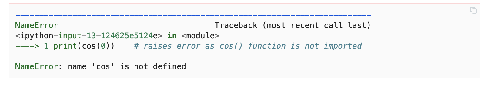

How to use and install python#
Python (from the comedy group Monty Python) is an interpreted programming language, meaning the written code needs to be “translated” to commands for the machine by a so called interpreter in order to be run. This apparent detour however makes for a better readability, writability and error location for us humans. Python is free to use and it’s also free to contribute by writing own packages. A plethora of powerful packages are available which is one of the reasons for python’s large popularity.
There are many different ways to use python. The easiest and quickest way is to run it on external servers which include pre-defined environments. If you have a Google account you may want to go to your Google drive and open a Google Colaboratory as shown below.
from PIL import Image
from IPython.display import display
img = Image.open("graphics/google_colab.png")
img = img.resize((int(img.width / 3), int(img.height / 3)))
display(img)
Google colaboraties are in notebook format which include cells where python code can be execute and cells which can be used for writing text in, e.g., markdown format. While this is very useful and provides easy access, we aim to build a deeper understanding for python which is why we install it locally on your computer. This can be done in various ways. You need to install a python interpreter which can be accessed by different working environments. A simple way is to install the Anaconda distribution which not only installs the python interpreter, but, also many other packages and environments. Personally, I prefer to keep it a little cleaner which means installing the python interpreter first and choosing a development environment which you like. In my case, it is the combination of Python with VS Code. Another popular developer environment is PyCharm. I am going to assist your installation in the first week of the course. A good explanation can be found here.
Python basics#
This course mostly uses jupyter notebooks and we are going to take a look at scripts later. In notebooks, code is written in cells, which can be run independently. To run a cell, one can use the run symbol above the cells by clicking on it. A more convenient way is again using the corresponding keyboard shortcut: holding shift and pressing enter (or control for mac users). For instance, executing the next cell, prints the python version which is used.
import sys
sys.version
'3.13.1 (main, Dec 3 2024, 17:59:52) [Clang 16.0.0 (clang-1600.0.26.4)]'
import this
The Zen of Python, by Tim Peters
Beautiful is better than ugly.
Explicit is better than implicit.
Simple is better than complex.
Complex is better than complicated.
Flat is better than nested.
Sparse is better than dense.
Readability counts.
Special cases aren't special enough to break the rules.
Although practicality beats purity.
Errors should never pass silently.
Unless explicitly silenced.
In the face of ambiguity, refuse the temptation to guess.
There should be one-- and preferably only one --obvious way to do it.
Although that way may not be obvious at first unless you're Dutch.
Now is better than never.
Although never is often better than *right* now.
If the implementation is hard to explain, it's a bad idea.
If the implementation is easy to explain, it may be a good idea.
Namespaces are one honking great idea -- let's do more of those!
Basic Python#
Just starting a notebook and thus a python kernel already allows several basic operations. The perhaps most obvious functionality would be to use a cell to calculate a mathematical expression. To do so, just enter the expression and run the cell:
999+1
1000
# comments inside the cell, starting with '#' help readers to understand your code.
# These lines are not run!
2 * (2 + 2) - 4
4
While jupyter will print the result of such one line expressions immediately, writing both expressions in one cell will print only the last computed result:
999+1
2 * (2 + 2) - 4
4
In the common case, where code inside one cell will exceed one line or will produce more than just on result, the print() function can be used. Functions in python get their parameters in parentheses (more on functions later):
print(999+1)
print(2 * (2 + 2) - 4)
1000
4
Some basic operations and functions are
print('Addition:', 1 + 1 )
print('Subtraction:', 2 - 1 )
print('Division:', 1 / 2 )
print('Multiplication:', 2 * 1 )
print('Modulus:', 3 % 2 )
print('Floor division:', 5 // 2 )
print('Exponent:', 2 ** 3 )
print('Minimum:', min(2,5))
print('Maximum:', max(2,5))
Addition: 2
Subtraction: 1
Division: 0.5
Multiplication: 2
Modulus: 1
Floor division: 2
Exponent: 8
Minimum: 2
Maximum: 5
Autocompletion is a very useful tool for writing code. Not only will it provide already defined variables. It will also show you available methods on different objects (more on objects later).
Autocompletion or suggestions for completion will appear when pressing tab in code, as long as it is not the beginning of a line (where it will indent the line, see loops, functions).
For instance, when typing pri and hitting tab, jupyter will complete it to print.
Help#
In order to get information, for example on the print()function, help can be summoned by using yet another function:
help(print)
Help on built-in function print in module builtins:
print(*args, sep=' ', end='\n', file=None, flush=False)
Prints the values to a stream, or to sys.stdout by default.
sep
string inserted between values, default a space.
end
string appended after the last value, default a newline.
file
a file-like object (stream); defaults to the current sys.stdout.
flush
whether to forcibly flush the stream.
Data Types#
The most basic data types in python are numeric, string and boolean. However, there are many, many more. In order for many operations to work properly, the data types must be compatible with one another. With the type() function the datatype of an object can be printed.
a = 1
b = 1.0
c = 'two'
d = True
print('a:', type(a))
print('b:', type(b))
print('c:', type(c))
print('d:', type(d))
a: <class 'int'>
b: <class 'float'>
c: <class 'str'>
d: <class 'bool'>
Changing the type of a variable can be achieved by the respective functions:
print(int(3.14))
f = "2.5"
print(10 + float(f))
3
12.5
Some mathematical operations can also be applied to strings/lists:
a = 'Who would '
b = 'have thought'
c = '?'
print(a+b+(c*5))
Who would have thought?????
Packages and Modules#
Python’s functionality can be expanded by loading modules to the namespace. A module may be seen as a chunk of python code for a special task someone has already written for you to use while package signifies the inclusion of the underlying file structure to load the modules.
In order to make a module’s complete functionality available, it has to be loaded to the namespace trailing the import statement. Calling a module function in this case requires the module name with a dot before the function: package.function().
A module can be imported under an alias, using the as statement. This can help someone reading your code to know from which module a function is imported while keeping the code shorter and thus better readable.
Tip
By convention all imports are done at the beginning of the code.
import math
print(math.sqrt(4))
import numpy as np
print(np.sqrt(4.0))
2.0
2.0
To import a single function (or class) from a module one calls from <module> import <function>. Here, the module’s name does not need to be added when calling the function. Similarly, an asterisk can be used as a wild card, as in from <package> import *, to import all functions (classes) from one module (so not to add the module prefix every time in the code).
The following examples uses the math module, which contains functions such as the sine, cosine or square root.
from math import sqrt
print(sqrt(4))
2.0
Note
Calling a function which is not imported results in an error.
Usually, python is rather explicit in where to look for your mistake.
#print(cos(0)) # would raise error as cos() function is not imported

With the wild card, all functions from the math module are now loaded to the namespace.
from math import *
cos(0)
1.0
Variables#
Objects can be stored in variables by assigning them using =. Since everything in python is an object, anything can be saved in a variable: numbers, strings, lists, etc. Python will automatically recognize the format of a variable to let the user know about incompatibilities. Calling a variable before it is assigned will also throw an error.
Note that python is case sensitive, meaning that when assigning variables a ≠ A.
var_1 = 5 ** 2
print(var_1)
var_2 = 'twenty five'
print(var_2)
25
twenty five
Caution
Do not name your variables like built-in python objects!
In jupyter notebooks, built-in objects are automatically coloured green. For example:
list
int
dict
dict
Logical Conditions#
In order to compare values, logical operators can be used. The most common are
Operator |
Meaning |
|---|---|
== |
equal |
!= |
not equal |
> |
greater than |
< |
less than |
>= |
greater than or equal to |
<= |
less than or equal to |
The result will be a boolean: either True or False.
Comparing statements may also be combined by and or or and can be negated by not.
a = (1<2)
b = (0 == 1)
print(a, b)
print(a and b)
print(a or b)
True False
False
True
Branching#
In a program, code must often be run conditionally on some input or previous result. The if, else and elifstatement can be used to select which branch of code shall be run. The condition is followed by a colon and the respective code for that condition must be indented (automatically with a line break or by pressing tab).
Caution
Indentation is not to be used for better readability.
Instead, it has a function and must not be used when not necessary!
a = 4
if a < 0:
print('a is negative')
elif a > 0:
print('a is positive')
else:
print('a equals zero')
a is positive
Lists and Tuples#
Lists and tuples are both an ordered collection of objects. While tuples cannot be modified, lists are rather flexible. Objects can be added to a list, removed or replaced. Lists appear in square brackets [], tuples in parentheses ().
Lists and tuples can be nested, meaning elements of a list or tuple can again be a list or tuple. Duplicates are also allowed. (A set() would not allow duplicates and is not ordered).
Elements can be accessed by indexing with square brackets behind the list name.
Note
Indexing in python starts with zero, so the first element of a list will have index 0.
my_list = [1,2,0,4,5]
my_tuple = ('a', 'b', 'c')
# length of object:
print('0. the length of my list is', len(my_list),', the length of the word "list"', len('list'))
# access first element
print('1. first element from my_list:', my_list[0])
# print variables more conveniently
print(f'2. second element of my_tuple: {my_tuple[1]}')
# to change an element
my_list[2] = 3
print(f'3. changing the third element in my_list: {my_list}')
# note that strings are lists of characters:
my_str = 'expression'
print(f'4. first letter in my_str: {my_str[0]}')
# last element
print(f'5. last element of my_tuple: {my_tuple[-1]}')
# slicing
print(f'6. from element 3 to end of my_list: {my_list[2:]}')
# reverse order
print(f'7. reverse order of my_list and slice: {my_list[3::-1]}')
# delete element
del(my_list[4])
print(f'8. add new element: {my_list}')
0. the length of my list is 5 , the length of the word "list" 4
1. first element from my_list: 1
2. second element of my_tuple: b
3. changing the third element in my_list: [1, 2, 3, 4, 5]
4. first letter in my_str: e
5. last element of my_tuple: c
6. from element 3 to end of my_list: [3, 4, 5]
7. reverse order of my_list and slice: [4, 3, 2, 1]
8. add new element: [1, 2, 3, 4]
Lists also allow for element checks using in (negated by not):
my_list = [1,2,3,4]
if 2 in my_list:
print('2 is an element of my_list')
if 10 in my_list:
print('10 is an element of my_list')
2 is an element of my_list
Beside definition by hand, the the functions list() and tuple() can be used to transform a suitable object to a list or tuple.
print(tuple(my_list))
print(list('python'))
(1, 2, 3, 4)
['p', 'y', 't', 'h', 'o', 'n']
Dictionaries#
Dictionaries allow to store key - value pairs in a kind of named list fashion. By convention the key element is of type string, while the value can be any object (including dictionaries). To define a dictionary, inside curly braces {}, the key element is followed by a colon and the value. The keys must be unique in a dictionary, since the value elements are accessed via the respective key: as in lists, one uses square brackets. Yet not with an index number but the desired key.
New key-value pairs can be added to a dict in a similar way as they are accessed. The new key in square brackets follows the dict name and a value is assigned by an equal sign.
Dictionaries are not ordered, as can be seen from the way of accessing and adding new k-v pairs.
my_dict = {'start': 1, 'end': 20}
print(my_dict['start'])
# new k-v pair
my_dict['mid'] = 10
print(my_dict)
1
{'start': 1, 'end': 20, 'mid': 10}
All keys and value can be accessed with the .keys() and .values() method (more on methods later).
print(my_dict.keys(), my_dict.values())
dict_keys(['start', 'end', 'mid']) dict_values([1, 20, 10])
(Un)packing#
Python allows to assign multiple variables at once, called (un)packing. This is most common with tuples but can be expanded to other iterables. The variables to be assigned are separated by a comma.
my_tuple = ('one', 2, 'three')
a, b, c = my_tuple
print(a, b, c)
# the asterisk assigns all surplus values on the right hand side of the equal sign to a
*a, b = 1, 2, 3, 4
print(a ,b)
one 2 three
[1, 2, 3] 4
Loops#
for-loop#
A for-loop is used for iteration, if the number of iterations is known prior to execution. A for loop iterates over any sequence like lists, tuples, strings etc. A common way is to loop over a range(n) object. Caution: indexing starts from 0 and for range objects ends at n-1!
Note that when iterating a list or tuple it might be worth considering to choose an informative name (especially when nesting loops).
To write a loop, for is followed by the iterating variable, in and the sequence to iterate before a colon. The code to execute every step begins in the next line and is indented.
# range object for iterating numbers
for i in range(5):
print(f'{i} squared is {i**2}')
print('')
# iterate over a tuple/list
for tuple_element in my_tuple:
print(tuple_element)
print('')
# iterate over tuple/list element and index
for i, tup_el in enumerate(my_tuple):
print(f'{tup_el} at position {i}')
print('')
# iterate over keys and values in dict
for k,v in my_dict.items():
print(f'key: {k}, value: {v} ')
0 squared is 0
1 squared is 1
2 squared is 4
3 squared is 9
4 squared is 16
one
2
three
one at position 0
2 at position 1
three at position 2
key: start, value: 1
key: end, value: 20
key: mid, value: 10
while-loop#
When the number of iterations for a loop is not knwon beforehand, a while-loop can be used. It will run, until a terminal state is reached or some criterion is satisfied. Usually, an initial state is given which will be altered by some operation and thus lead to termination.
A while-loop start with while followed by the condition and a colon. The condition may be negated with not.
Warning
Infinit loops may occur when the terminal criterion is not properly defined or the code is otherwise defective.
a = 0
while a < 4:
print(a)
# use combined operator a += 1, equal to a = a + 1
a += 1 # when not including this line, a will forever stay a = 0 and the loop will not terminate by itself
# What will be printed in this case?
var = 5
check = True
while check:
print(f'{var} is greater zero')
var -= 1
check = var > 0
0
1
2
3
5 is greater zero
4 is greater zero
3 is greater zero
2 is greater zero
1 is greater zero
List comprehension#
Python offers a handy way to create lists. It looks like a for-loop in a list and is called list comprehension. It is written in one line instead of indenting as in ordinary for-loops. These expression can also be nested.
list_1 = [i for i in range(5)]
print('list_1:', list_1)
# a nested expression
list_2 = [[i*j for i in list_1] for j in [0,1]]
print('list_2:', list_2)
list_1: [0, 1, 2, 3, 4]
list_2: [[0, 0, 0, 0, 0], [0, 1, 2, 3, 4]]
Dict comprehension#
Analogous to list comprehension, we can create dictionaries with key and value pairs. For example from the list above:
dict_1 = {str(k): k**2 for k in list_1}
print(dict_1)
print(dict_1['3'])
{'0': 0, '1': 1, '2': 4, '3': 9, '4': 16}
9
break and continue#
For more control over a loop, the breakand continue statements can be engaged. Used with a condition, break will terminate the loop when satisfied while continue will stop and skip the current iteration to jump to the next.
for i in range(100):
if i % 2 != 0: # % is the modulo operator
continue # continue in the if-statement skips printing for odd i
print(f'{i} is even')
if i == 8: # when i equals 8, the loop terminates (the print statement for i == 8 is executed before)
break
0 is even
2 is even
4 is even
6 is even
8 is even
Functions#
Python come with many built in functions, some of which have been shown or used before, as well as the option to define new functions.
To define a function, use def function_name(args): before the indented body of the function begins in a new line. args here means arguments, which are passed to function.
Note that a function must not necessarily be defined using arguments.
def my_print(word):
print(word)
my_print('Greetings')
def print_hi():
print('hi')
print_hi()
Greetings
hi
Return#
To assign the result of a function to a variable for further use, the return keyword is used. If more than one object is to be returned, use commas to separate them.
The return statement is indented at least once from def, even more than once when using branching, for example.
With branching, several return statements may appear in one function.
The return command must not be confused with a print() statement!
import numpy as np
data = [1,2,3,4,5,6,7]
print(np.mean(data))
def my_mean(arg_list):
sum_ = 0
length_count = 0
for el in arg_list:
sum_ += el
length_count += 1
return sum_/length_count
print(my_mean(data))
4.0
4.0
Yield#
Besides return, another option is yield. The main difference is that return will do a calculation and send the result back at once, while when using yield a generator object is created and results can be returned sequentially.
Comparing the following two examples, the return_list function stores the complete list in the memory, while the yield_list function does not. Instead, it returns the values one after another (when using the next() function or a loop) remembering the current state of the function.
def return_list(n):
return [i for i in range(n)]
def yield_list(n): # function mimics range()
i = 0
while i < n:
yield i
i += 1
return_list(5)
[0, 1, 2, 3, 4]
yield_list(5) # creates a generator object
<generator object yield_list at 0x10ec6bd00>
gen = yield_list(5) # assign generator object to variable
print(next(gen)) # call next() to jump to next 'yield'
print(next(gen)) # only one value in memory
print(next(gen)) # another next() throws error because the generator is depleted after 4!
0
1
2
Since the state of the generator is remembered and we have already moved beyond 2 using next(), the following for loop ‘finishes’ the generator:
for i in gen:
print(i)
3
4
Generator object can be useful when working with huge files which do not fit into memory.
For functions with several arguments, the order of inputs is important. They will be read according to the function definition. When the arguments are specified in the function call, the input order does not matter.
def divide(numer, denom):
return numer / denom
print(divide(10,2))
print(divide(2,10))
print(divide(denom=2, numer=10))
5.0
0.2
5.0
Default values for a function can be set. If an argument is not specified when calling the function, the default value will be used.
def divide(numer, denom = 1):
return numer / denom
print(divide(numer=10))
10.0
More advanced function writing involves recursion, meaning python allows a function to call itself.
import math
def my_factorial(n):
if n == 0:
return 1
else:
return n * my_factorial(n-1)
print(my_factorial(5))
print(math.factorial(5))
120
120
Global and Local Variables#
Variables can be defined globally, i.e. outside of functions. A variable defined inside a function will only exist inside the scope of the function. Should a local variable be given the same name as a global variable, the function will use the value locally defined!
Global variables inside functions can be defined using the global keyword before the respective variables.
x = 7
def f_1():
print('calling f_1, x =',x)
f_1()
def f_2():
x = 10
f_2()
print('after calling f_2: x =', x)
def f_3():
x = 10
print('calling f_3: x =', x)
f_3()
print('after calling f_3: x =', x)
def f_4():
global x
x = 10
f_4()
print('after calling f_4: x =', x)
calling f_1, x = 7
after calling f_2: x = 7
calling f_3: x = 10
after calling f_3: x = 7
after calling f_4: x = 10
Lambda functions#
It might occur that a function is needed which is only needed once and has only a limited functionality. To spare you and the reader of the code from jumping to a block of defining such a function you can use a lambda function. They are written in-line by the keyword lambda, followed by the parameters and a colon before the body.
Arguments are passed in parentheses as usual.
Note
The lambda syntax should only be used for simple functions!
from math import exp
# regular way
def reg_func(x):
return 1/exp(x)
print(reg_func(.5))
#lambda function with identifier
l_func = lambda x: 1/exp(x) # this way, it is hard to find the origin of a function if it is called elewhere
print(l_func(.5)) # in your code. It is not recommended, yet still possible.
# for single use, no identifier
print((lambda x: 1/exp(x))(.5) )
0.6065306597126334
0.6065306597126334
0.6065306597126334
Lambda functions can be easily applied in combination with list comprehension, where the can be defined in place.
# with list comprehension
l_list = [(lambda x: 1/exp(x))(i) for i in list_1]
print(l_list)
# always consider doing it without a lambda function
print([(1/exp(i)) for i in list_1])
[1.0, 0.36787944117144233, 0.1353352832366127, 0.049787068367863944, 0.018315638888734182]
[1.0, 0.36787944117144233, 0.1353352832366127, 0.049787068367863944, 0.018315638888734182]
Classes#
Since almost everything in python is an object, classes are a very important element to its functionality. A class can be seen as a constructor for certain objects.
To define a class, the class keyword is followed by the class name. By convention, for class names the CamelCase style is used.
# define class Student
class Student():
uni = 'Passau'
subject = 'math'
grades = [1.3, 1.7, 3.0]
# instantiate object
Chris = Student
Tina = Student
# get uni of student Chris
print('Uni:', Chris.uni)
# student changes subject
Chris.subject = 'biology'
print("Chris' subject:", Chris.subject)
print('class name:', Chris.__name__)
print("Tina's subject:", Tina.subject)
Uni: Passau
Chris' subject: biology
class name: Student
Tina's subject: biology
Classes can not only store values but also functions, called methods. Methods are defined just like regular functions, but inside the class body. To make a class more useful (compared to the example above), the __init__() method is needed. As arguments, it takes self and all other arguments needed as input to build the object. self is used for instance variables, i.e. variables that belong to an object and not the whole class.
Methods and class variables are chained by a . to the object.
import numpy as np
class Student():
def __init__(self, uni, subject, grades):
self.uni = uni
self.subject = subject
self.grades = grades
#define method to show average grade
def avg_grade(self):
return np.mean(self.grades)
Chris = Student('Passau', 'Art', [1.3, 1.7, 3.0])
Tina = Student('Regensburg', 'Physics', [1.0, 2.0])
Chris.subject = 'engineering'
print(f'Chris: {Chris.subject}')
print(f'Tina: {Tina.subject}')
print(Chris.avg_grade())
# lists have a built-in method append, which adds items given as arguments to the end of the list (see help(list))
Chris.grades.append(5.0)
print(Chris.avg_grade())
Chris: engineering
Tina: Physics
2.0
2.75
Inheritance#
Classes can inherit all properties from other classes by using the super() function in the constructor. This should be applied, if a new class should expand the functionality of the original class without wanting to change the original class. For example if a Student is also a resident:
class LocalResident(Student):
def __init__(self, uni, subject, grades, address):
super().__init__(uni, subject, grades)
self.address = address
Chris = LocalResident('Passau', 'Art', [1.3, 1.7, 3.0, 5.0], 'Innstr. 27')
print(f" Uni and address: {Chris.uni}, {Chris.address}")
print(type(Chris))
Uni and address: Passau, Innstr. 27
<class '__main__.LocalResident'>
Files#
Regular python files end with .py and code can be written and read in any text editor. Only the suffix will tell the interpreter how to handle the file, in this case as a python script.
Jupyter Notebook files end with .ipynb. The special cell-wise structure leads to more formatting effort which is stored in a .json format (see later chapters), meaning that when a .ipynb file is opened in an ordinary text editor, the structure will be very different from what is shown in this jupyter interface.
Below a jupyter notebook is shown on the left. The formatting is seen on the right, where the .ipynb file was openened using a text editor.
Virtual environments#
Even though it might be a little early to talk about virtual environments, I think it is helpful to know about them and use them from the beginning. Let us first talk about why we want to use them. Usually you will work with python in a project-oriented way. For instance, you may need to conduct certain data driven analysis for a seminar paper or you want to develop your powerful stock market trading strategy. Each project has its own goals and needs such as, e.g., getting and analyzing data by different models.
The python distribution you installed is considered to be the base installation and comes along with some pre-installed packages which are listed in the python standard library. However, other useful packages must be installed before you can use them. For instance popular packages such as numpy, scipy, pandas, scikit-learn, etc. These packages are installed by a package manager which usually is the pip for must users (conda or poetry would be alternatives). Not only that different packages may be needed for different projects, sometimes different versions of a package must be installed for different projects.
Thus, it is very useful if every project can have its own safe space with its packages and settings needed for the project. This is exactly which is enabled by virtual environments. They can be created in your project folder on top of the python base installation by the python -m venv your_environment_name command. Once they are activated (or in VS Code defined to be used for a notebook), everything which is done stays in this environment and does not impact the global python installation nor other projects and their virtual environments. We are going to go through the creation and usage of virtual environments in the course step by step, so do not worry!
Note
It may be necessary to call python3 and pip3 instead of python and pip. This depends on the OS and some settings. Furthermore, python and pip commands need to be exectued in the terminal. If you want to execute them in a notebook you need to do it with an exclamation mark in the beginning of a cell, e.g.:
!pip install numpy